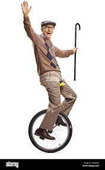

ACL Injuries are hard. You become very sad.
For one, I can't even ride a unicycle.
This could be me^^, but since I tore my acl, it cannot be me.
here is some more information on the quad graft!hAHA!!! Did I get you??? JK that song was lwk heavenly, so ur welcome. Just cuz I feel like it, here is a poem on my plight with my ACL:
My leg once strong, now frayed and torn,
A whisper of pain I can’t ignore,
The unicycle waits, alone, forlorn,
As I mourn the wheels that roll no more.
The empty road, the quiet sky,
My dreams of balance left to dry,
Each spin I crave, each try denied,
A silent ache I can’t defy.
The days are long, the nights the same,
A healing song with a stubborn refrain,
But someday soon, through grit and pain,
I'll ride again, reclaim my lane.